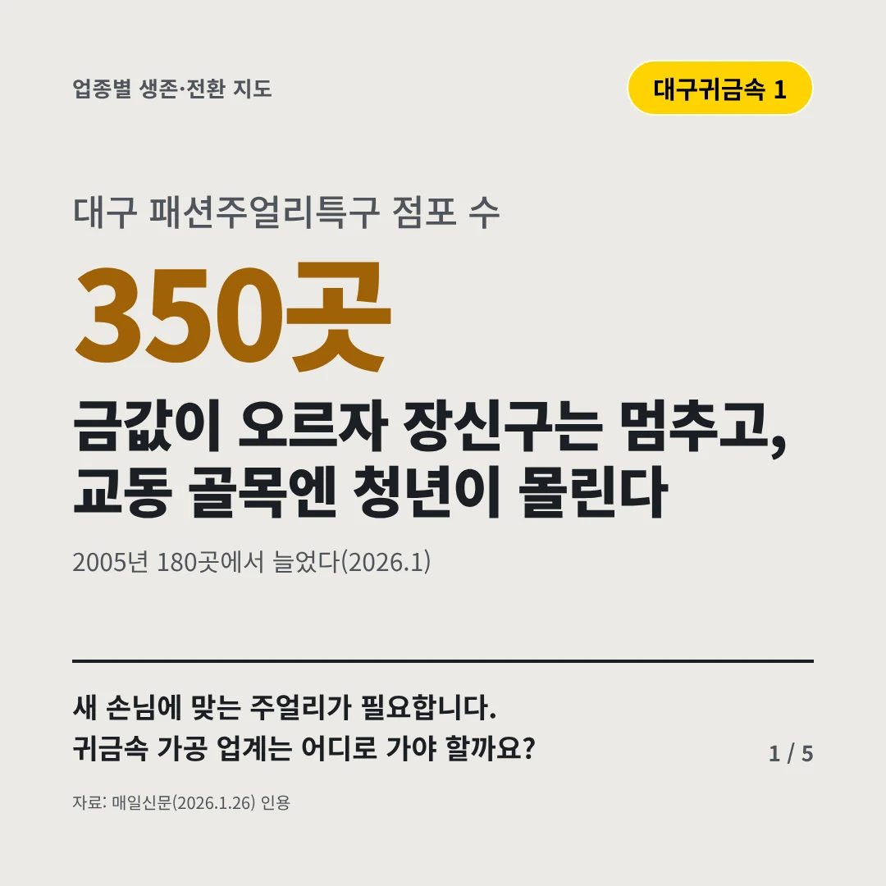
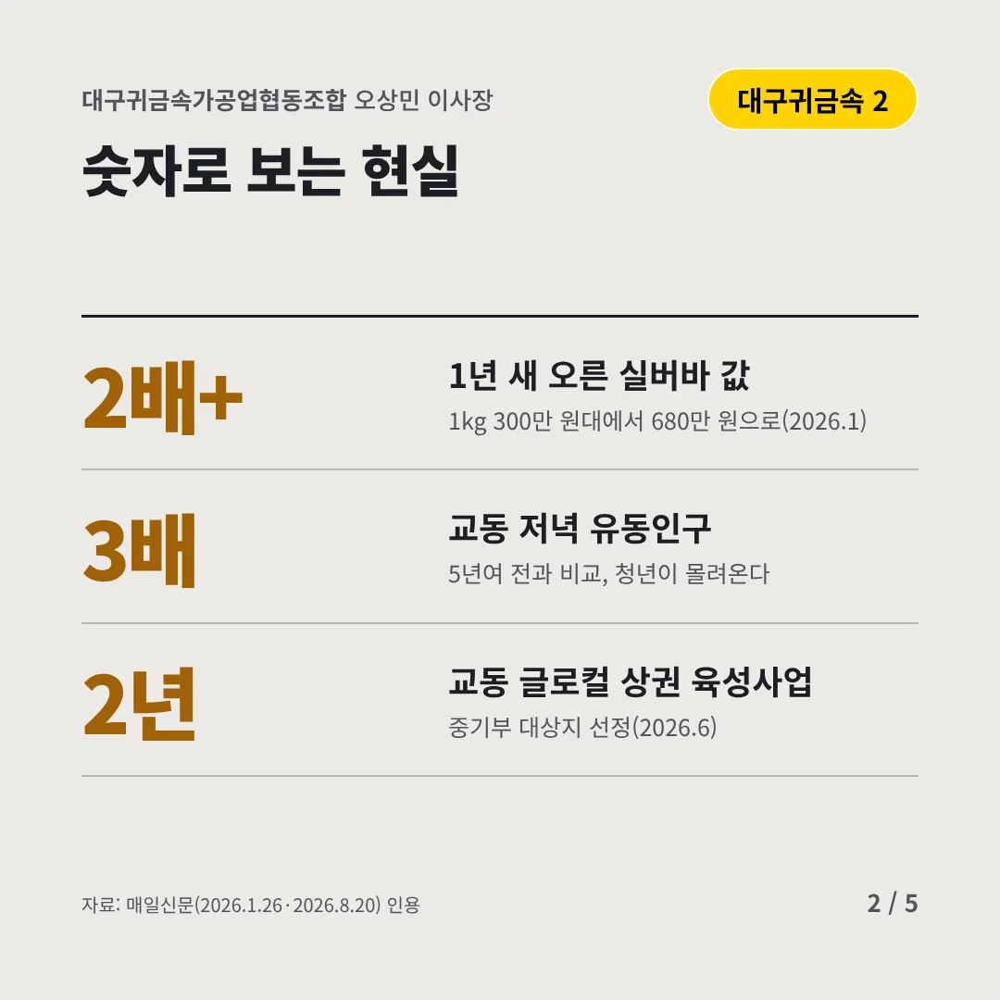
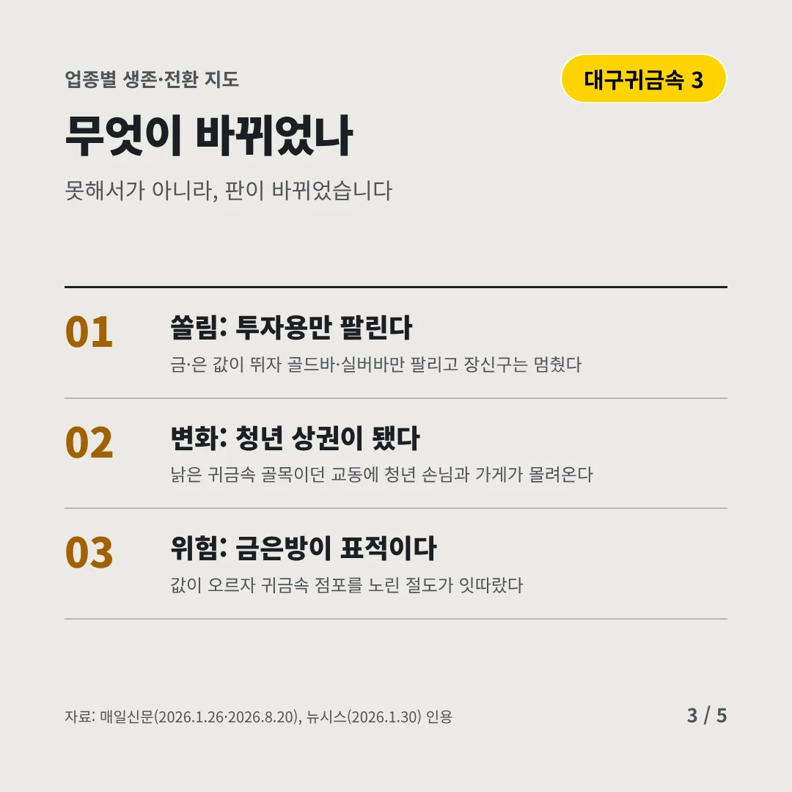
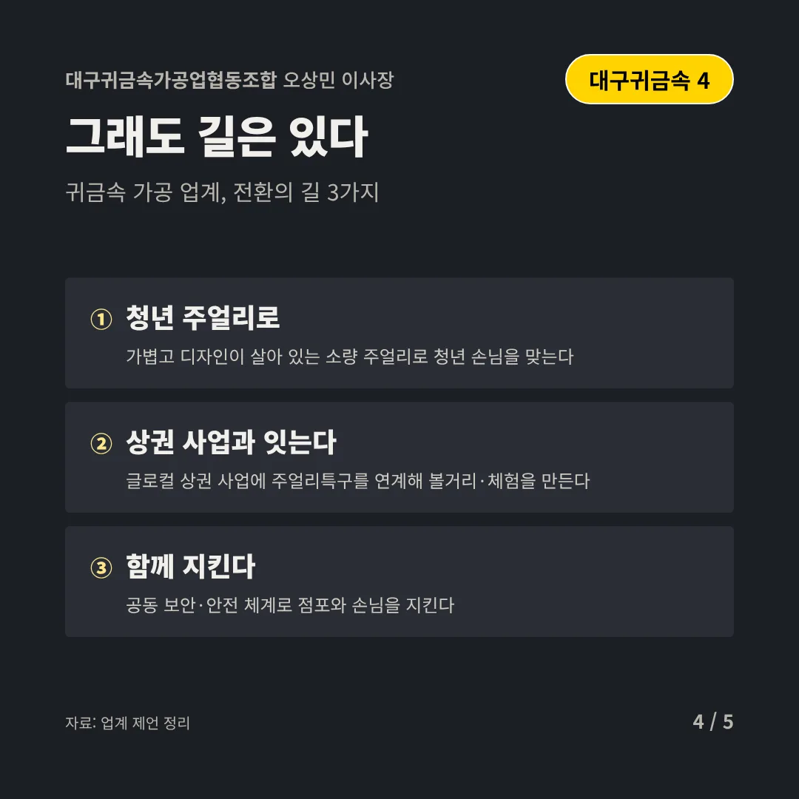
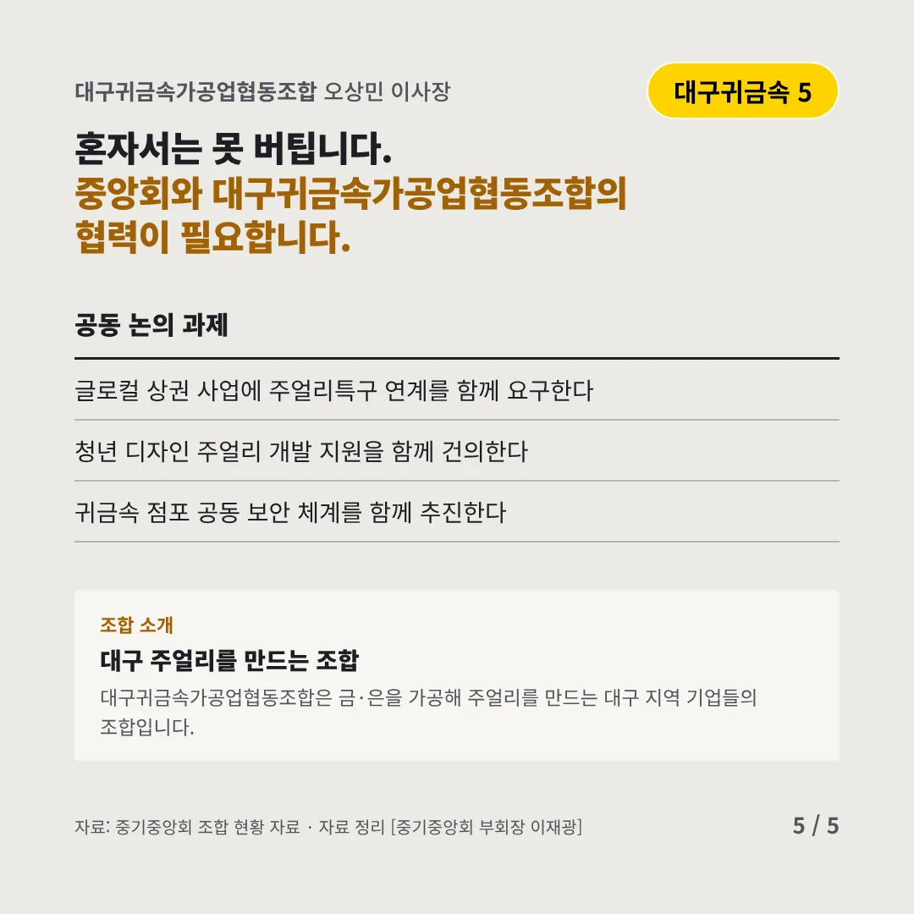
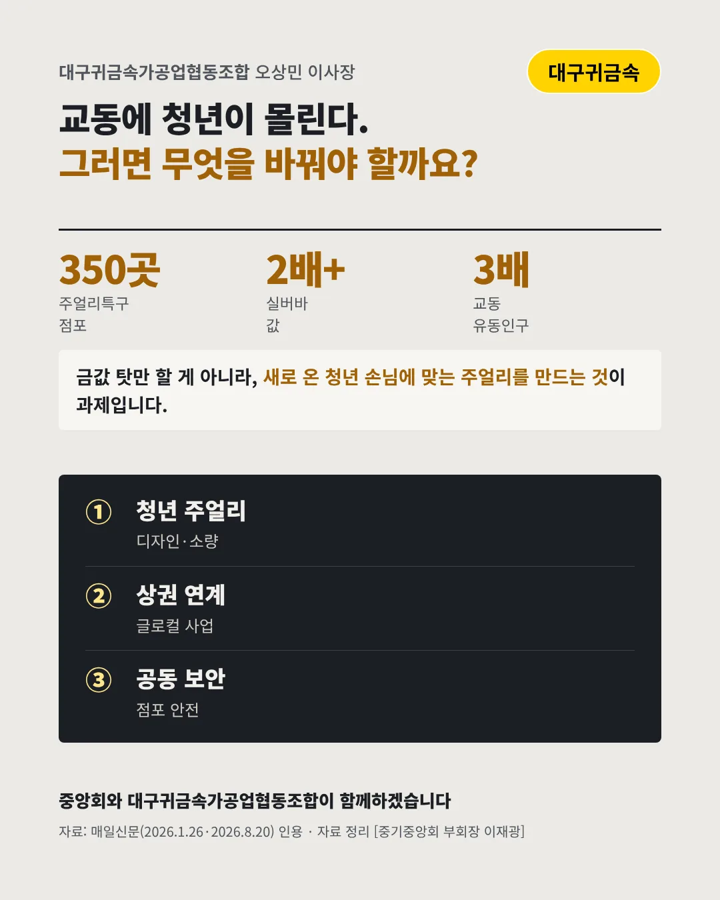

대구귀금속가공업협동조합
금값이 오르자 장신구는 멈추고, 교동 골목엔 청년이 몰린다
350곳 대구 패션주얼리특구 점포 수






새 손님에 맞는 주얼리가 필요합니다. 귀금속 가공 업계는 어디로 가야 할까요?
숫자로 보는 현실
- 2배+1년 새 오른 실버바 값1kg 300만 원대에서 680만 원으로(2026.1)
- 3배교동 저녁 유동인구5년여 전과 비교, 청년이 몰려온다
- 2년교동 글로컬 상권 육성사업중기부 대상지 선정(2026.6)
무엇이 바뀌었나
- 쏠림: 투자용만 팔린다금·은 값이 뛰자 골드바·실버바만 팔리고 장신구는 멈췄다
- 변화: 청년 상권이 됐다낡은 귀금속 골목이던 교동에 청년 손님과 가게가 몰려온다
- 위험: 금은방이 표적이다값이 오르자 귀금속 점포를 노린 절도가 잇따랐다
그래도 길은 있다
- 청년 주얼리로가볍고 디자인이 살아 있는 소량 주얼리로 청년 손님을 맞는다
- 상권 사업과 잇는다글로컬 상권 사업에 주얼리특구를 연계해 볼거리·체험을 만든다
- 함께 지킨다공동 보안·안전 체계로 점포와 손님을 지킨다
한 장 요약

조합 소개
대구귀금속가공업협동조합은 금·은을 가공해 주얼리를 만드는 대구 지역 기업들의 조합입니다.
자료: 매일신문(2026.1.26), 매일신문(2026.1.26·2026.8.20), 뉴시스(2026.1.30)